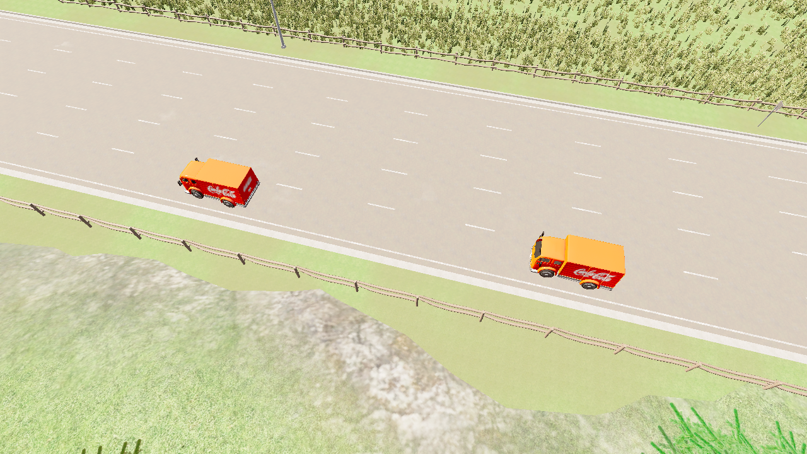
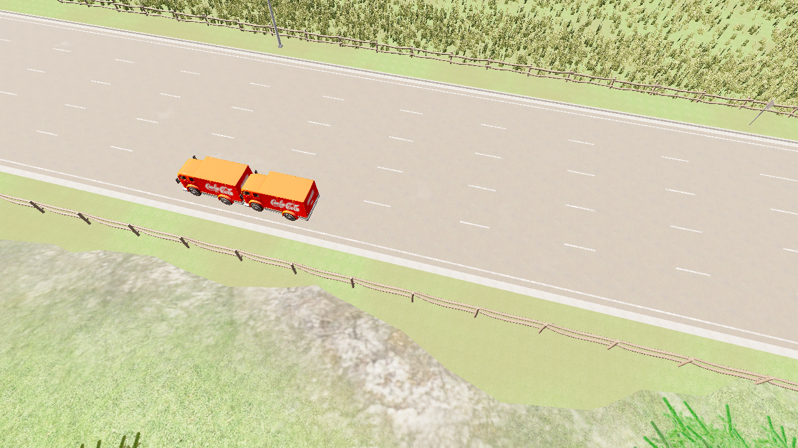

수정 전 · 중복 실행 허용
같은 요청이 다시 들어오면 안전 정지가 해제되고 앞 차량으로 가속합니다.


충돌 센서와 요청 기록실험용 제어기에 제동 초기화 결함을 주입하고 실제 CARLA 물리 엔진에서 비교했습니다. 화면 창 없이 RGB 카메라와 충돌 센서로 증거를 수집합니다.
같은 요청이 다시 들어오면 안전 정지가 해제되고 앞 차량으로 가속합니다.


충돌 센서와 요청 기록같은 요청은 기존 제동 상태를 유지합니다.
충돌 센서와 요청 기록